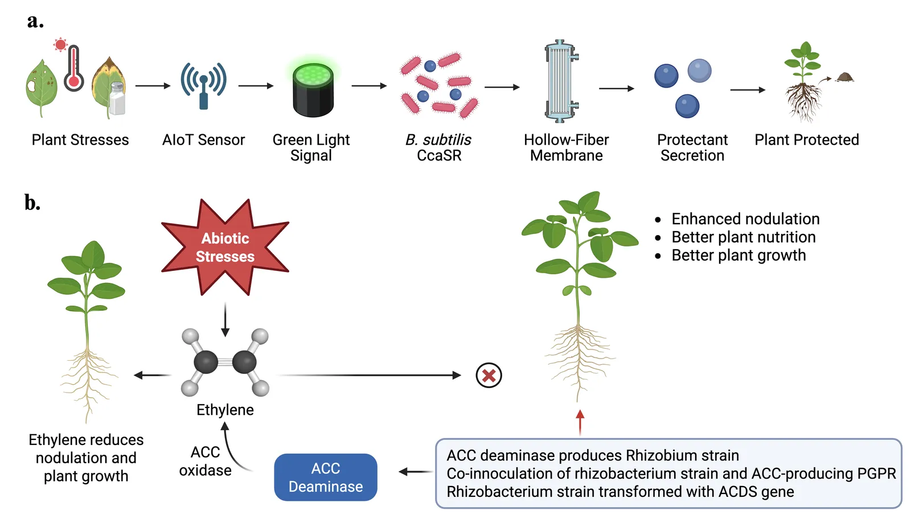
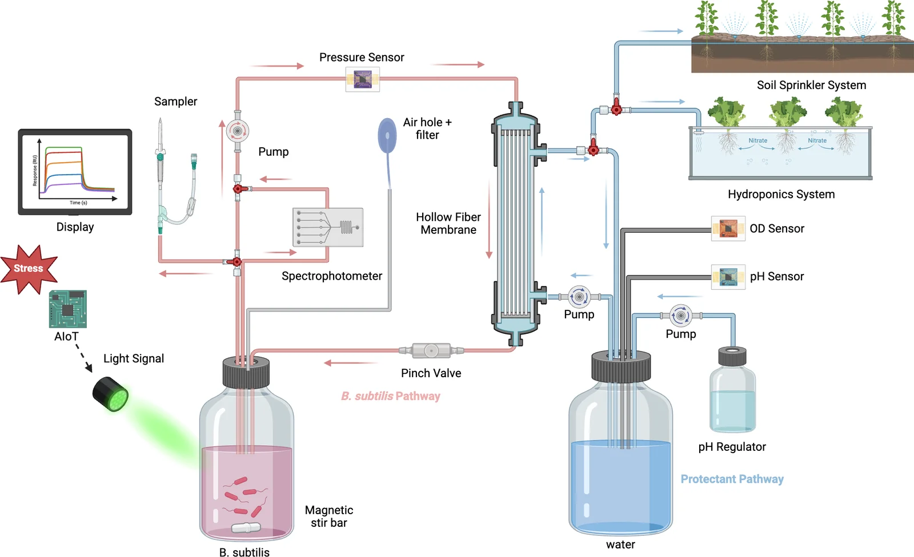
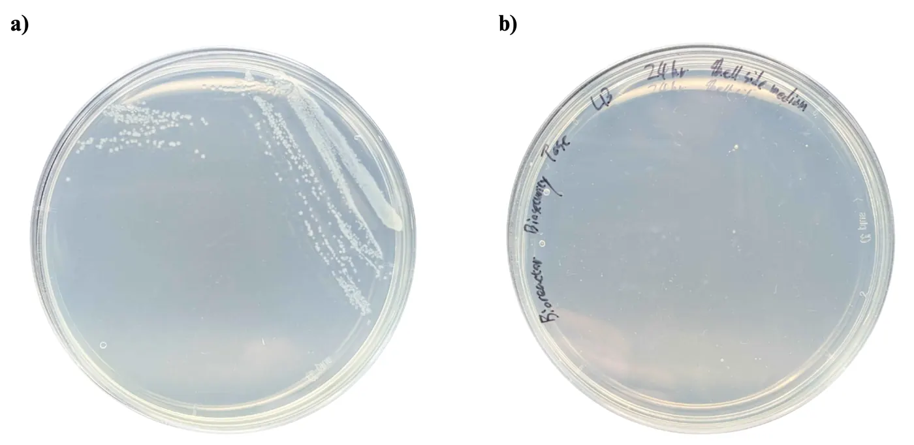
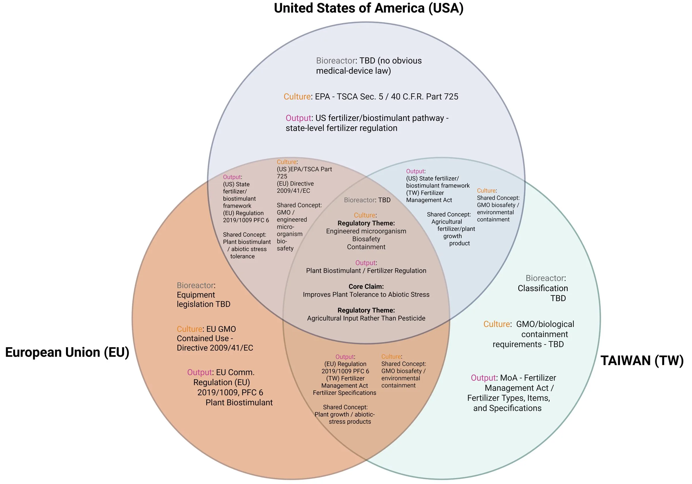
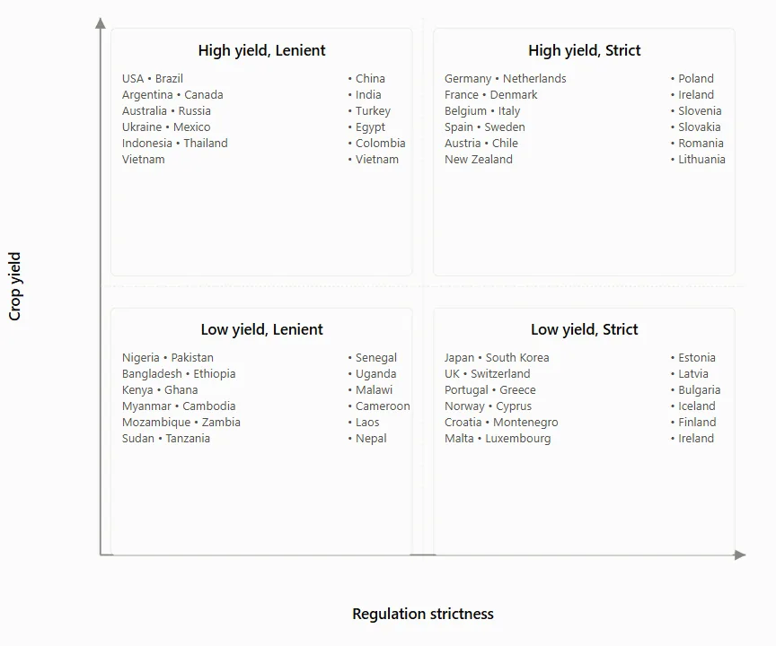

Measured
The 102.4 h run, its crossflow and its transmembrane pressure. The module pressure drop on 16 August. 434 h of in-line optical density. The photometer calibration against a TiO2 dose.
On this page
Biomanufacturing is an industrial process that uses living systems, such as microorganisms, plant cells, or animal cells, to produce commercial products and materials.
Green biotechnology applies biological systems and engineering principles to crop production. Within it, ReLeaf works on agricultural biologicals: the plant-protective molecules that hold a crop together under heat, drought and salinity.
Finding that molecule is the smaller half of the problem. Biomanufacturing decides whether it can be made reliably and delivered where it is needed, and its four constraints are what usually stop a protective protein from reaching a field: production cost, process control, scale-up and technical complexity. ReLeaf answers them by moving production to the point of use. The molecule is made on the day it is needed, by a machine small enough to stand beside the crop.
ReLeaf detects environmental stress through electronic sensors and activates engineered B. subtilis using green light. The bacteria produce plant-protective molecules inside a hollow-fiber bioreactor, which releases the protectants while retaining the engineered cells.

A secreted protein protectant. ACC deaminase is the one every bench result on this wiki was produced with; LEA14 and BoPEP4 are designed, not yet made in quantity. Protein Design
Bacillus subtilis, non-pathogenic and a natural secretor. Every reactor run to September is strain 168, the constitutive ACC deaminase run of 1 to 6 September included; the production strain is WB800, first in the reactor on 8 October. Parts
Nine Level‑1 modules confirmed by colony PCR, amplicon check and sequencing; a Level‑2 device junction-checked on three clones at 375, 632 and 661 bp. Results
A hollow-fibre perfusion loop, 0.2 µm rating, about 400 mL working volume. Retention and recovery in one cartridge, so there is no downstream train. Hardware
Every claim on this page is about how the thing is made. What the protein does once it reaches a root is on Plants and Math Model.
Green light activates the CcaSR optogenetic system in engineered Bacillus subtilis, triggering the production of ACC deaminase, LEA14, or BoPep4.
We wanted production that could be commanded, not a cell locked into one output forever. Four of the collection’s five modules build that command chain: a ho1:pcyA operon that supplies the chromophore without which the photoreceptor is apoprotein, CcaS‑m3 as the sensor, CcaR as the response regulator, and PcpcG2-veg driving a secretion tag fused to whichever protectant sits in the cargo slot. The fifth module carries the same cargoes behind a constitutive promoter, so a negative protectant result has one fewer explanation to rule out.
For a process, light is an actuator with no mass. A chemical inducer has to be bought, stored, metered into a sterile vessel and then accounted for in the product stream, and IPTG and its relatives cost money on every batch. Light adds no line into the loop, leaves no residue in the permeate, and can be re-dosed from software without anyone opening the vessel. That is what lets a forecast drive production: the command path ends at an LED.
Light also answers the growth–production tradeoff. What a cell spends on a recombinant protein it cannot spend on growing, so continuous expression taxes the chassis for the whole run. A light-responsive design lets the culture build biomass first and switch to protectant when the forecast says the stress is coming. That is the operating pattern the Digital Twin is built to drive.

The first thing a process needs to know about a switch is what it costs the culture. Across the six arms, growth rate spans 0.279 to 0.317 h−1, all within one standard error of each other, and the highest-green arm reaches the highest plateau. Green induction therefore carries no measurable growth penalty at these intensities, so inducing does not trade against biomass the way a metabolic burden would.
Full record: the thirty-five parts in five modules on Parts, the builds and the gels on Experiments and Results.
The product of this process is one of three plant-protective proteins: ACC deaminase, which lowers stress-induced ethylene; LEA14, a late embryogenesis abundant protein that stabilises other proteins under osmotic stress; and BoPEP4, a twenty-three residue elicitor peptide that signals drought through the PEPR1 receptor. Sequence analysis, structural modelling and targeted substitutions compared the candidate variants before any DNA was ordered, against two constraints at once: the receptor has to recognise the molecule, and B. subtilis has to translate it, push it through the Sec pathway and leave it whole in a protease-rich supernatant.
Two of those results changed a construct, not just a slide. BoPEP4 opens with an uncharged GILIGS segment that makes no receptor contact and is conserved nowhere; removing residues 1 to 6 leaves the docking score flat, so the peptide gets shorter at no cost. And the six-histidine purification tag was ordered on the wrong end: fused after Asn23 it spends the free carboxylate that salt-bridges Arg487, and under an atom-resolved criterion that bond is present in no frame of the tagged trajectory against every frame of the wild type.
Biomanufacturing then asks what happens after the protein exists. Secretion and recovery are in the design, not a purification train bolted onto the end: the cell exports the protectant, it crosses the membrane, and it leaves the machine on the shell side, separated from the producer by the same component that contains it. One fractionation blot is the whole evidence base for the first of those two steps.

Full record: selection, alignments, docking and the molecular dynamics on Protein Design.
The vessel is one hollow-fibre cartridge doing two jobs, and an instrument set built because nobody can walk out to the field and take a sample.
Cells circulate on the lumen side of a hollow-fibre cartridge rated at 0.2 µm, the protein crosses to the shell side, and the shell-side liquid is what leaves the machine. One cartridge therefore does two unit operations at once, retention and recovery, which is why the process has no downstream train. It is also what makes continuous operation possible: cells are never harvested, so the culture is a standing asset, not a batch to be consumed.

| Key result | Value | Standing |
|---|---|---|
| Longest uninterrupted run | 102.4 h, OD600 0.8 to 3.8, perfusion growth model R² = 0.991 | Measured, one run |
| Crossflow and pressure through that run | about 371 mL/min, transmembrane pressure within about ±0.1 bar | Measured, one run |
| Growth in the loop against a flask | OD600 0.8 to 0.9 in about 2 h at 37 °C, flask 0.6 to 0.8 in about 4.5 h | One run each; stirring, sampling point and temperature all changed between cycles, so the comparison is confounded |
| Module | PES hollow fibre, 0.2 µm rating, about 400 mL working volume | Vendor specification [1]. Our own pages give the area as both 150 cm²/8 fibres and 200 cm²/11 fibres; the hydraulic fit in Scaling agrees with eleven |

What the run demonstrates in manufacturing terms is a contained vessel that held its hydraulics for four days while the culture grew twenty-fold, which is the operating window a farm unit needs. What it does not demonstrate is product: no titre has been measured in the permeate, and the reactor blot is read two opposite ways by two of our own drafts, so this page reports no release figure. Both are recorded on Results.
Excessive foaming was identified as a major concern, particularly because it can damage the hollow fiber membrane. Professor Chang pointed us toward two possible solutions: mutating the gene responsible for surfactant production or using chemical defoamers.
One of the most significant gaps Professor Chang identified was that our design lacked a pressure or driving force to push the protectant from the lumen side to the shell side. He explained that increasing flow rate would not solve this problem, since it only recirculates the fluid and generates no outward pressure. He recommended adding a valve to build pressure while reducing tube diameter to concentrate the outward force.
Professor Chang advised that our current membrane may be oversized, increasing the risk of cells adhering to or clogging the fiber walls, and stressed that monitoring flow rate and transmembrane pressure is essential, as these indicate membrane fouling.
The pinch valve in Figure 4 answers the driving-force point and the pressure trace from the 102.4 h run answers the monitoring point. The oversizing is now quantified: the fouling margin in Scaling puts the module about an order of magnitude larger than the duty needs. Foaming is still open, with no defoamer used and no surfactant-deficient strain built. Both meetings are recorded on Integrated Human Practices.
A reactor beside a field has nobody to sample it, so measurement is the part of this process we had to build ourselves. The inline photometer is the project's Process Analytical Technology tool: it reads culture turbidity continuously, in the loop, without drawing a sample, and a reference beam lets the system tell an instrument fault from a process event. The light plate apparatus is the characterisation rig that defines what a light dose is, and the digital twin is what turns all of it into a control action.
| Key result | What it gives a process |
|---|---|
| 434 h of in-line OD600 on one batch, 2,671 valid rows, no sample drawn | Continuous biomass without opening the loop. R3 |
| Sensor alarm at 216.3 h, OD channel unusable at 243.0 h: 26.7 h of warning | A reference beam separates an instrument fault from a process event, so a controller knows when to stop trusting a channel. R3 |
| Kalman forecast 41% better than persistence at 2 h ahead | Scored under a protocol fixed before the data were examined, so the batch can be steered, not only watched. R4 |
| A growth prior from a 96-well plate predicts 24 h biomass to within 7%; 29 to 68% off without it | Plate-to-reactor transfer: a scale-down model that carries real information between vessels. R5 |
| Inline photometer against a known TiO2 dose: ours R² = 0.9901, benchtop BioDrop R² = 0.8501 above 30 mg | A home-built in-line instrument that is the steadier of the two where it matters. Linearity, not cell count. Measurement |
The light plate apparatus carries one result worth taking to any other team’s optogenetic rig, and it is about the parts, not the biology. Forty single-bulb LEDs measured individually at 5 V in a fixed geometry spanned 2.01 to 2.54 kLux green, a 26% spread, and 360 to 438 lux red, a 22% spread, across units sold as identical. Sorting by measured output gives groups of four that agree to within about 1%, but the gap between sorted tiers is only 7% green and 10% red, so intensity has to come from the pulse-width duty cycle and matching only makes a column internally consistent. Evenness across the twenty-four positions was never measured, so the tiers are not calibrated intensity tiers and are not described as such.
Full record: the three build cycles and the measurement tables on Hardware; the channel table, the forecasts and the interlocks on Digital Twin.
We know that farmers want to emphasize that their crops are organic, so we created our bioreactor to meet their needs. We adopted a hollow fiber membrane, pump, and jar of culture medium in our bioreactor so that when the B. subtilis produces protectant, only the protectant is pumped out and the B. subtilis stays inside.
In this process, containment is not an added safeguard around the unit operation; it is the unit operation. There is no filtration or kill step between culture and product, so the membrane both recovers the protein and holds the organism, and if the module fails the two fail together. That is why pressure and flow are logged continuously, why the microcontroller opens the pinch valve above 0.50 bar, and why a droplet sensor sits under the rig.

Regulation shaped the design the same way, because ReLeaf is three regulatory objects, each on its own route.
It has to meet the ordinary obligations of a machine that holds a pressurised liquid: pressure integrity, leak prevention, material compatibility, electrical safety, cleanability and routine maintenance of fluid-contact parts. No jurisdiction we looked at has an obvious device law that claims it.
The engineered B. subtilis is supplied in a replaceable cartridge and regulated as a genetically modified microorganism for contained use, which brings controls on handling, containment, contamination, transport, storage and cartridge replacement. In the EU that is Directive 2009/41/EC.
Cell-free, so it is classified by composition, function and claim, not by how it was made. In the EU a non-microbial product claiming improved tolerance to abiotic stress falls under Regulation 2019/1009, PFC 6(B) plant biostimulant. Taiwan and the United States are less settled.

Classification outside the EU turns on whether a product is read as supporting nutrient use, altering plant physiology or acting as a plant regulator, so ReLeaf evaluates the biostimulant, biofertiliser and biopesticide routes separately for each protectant and each market. Keeping the organism inside the machine is what lets that separation hold: it gives the production strain and the agricultural product two clean regulatory paths instead of one tangled one.
Full record: the three-market comparison on Laws and Regulations, the risk assessment and the interlocks on Safety.
Instead of shipping a protectant to the field, we grow it there. There is no cold chain, no shelf life to manage, and no shipment to pay for since the protectant is produced metres from the plants it protects on the day they need it.
Vaccine distribution is the nearest measured analogue for what a temperature-controlled biological supply chain costs. In one field logistics study, cold-chain infrastructure accounted for 43% of logistics cost at the national store and transport a further 34%, 77% together [3]. A protectant made on the farm never enters that chain. In exchange every farm needs its own machine, and the case for ReLeaf rests on that trade.
Commercial feasibility turns on whether the usable protectant a unit produces justifies what it costs to run. The prototype build is the only cost figure we have, and it is a build cost, not a unit cost at volume: about NT$52,578 for the bacterial kit and NT$30,450 for the bioreactor, NT$83,028 together, roughly US$2,800. A techno-economic analysis would put ReLeaf's production performance and operating costs against that number to give a cost per unit of protectant, a break-even yield, and a comparison with what a farmer buys today. It cannot be written yet, because the quantity it needs most is the one nobody has measured.
Bacterial kit NT$52,578 and bioreactor NT$30,450, about US$2,800 together. Draft figures from the business plan, one unit, hand-built.
One growing season with agricultural cooperatives, research farms and extension offices, before any purchasing or service agreement is offered.
Not calculable. It needs a permeate titre, and no titre has been measured. The break-even yield follows from the same number.
The first step is a pilot, not a sale: five to ten units deployed for a single growing season, long enough to measure operating cost, reliability, maintenance burden, farmer usability and field performance under somebody else’s conditions. If individual ownership stays too expensive after that, the cost can be spread instead of cut, through cooperative purchasing, seasonal rental, a cartridge subscription or subsidised deployment through an extension programme [13]. Which of those fits is a question for the pilot.

Full record: market sizing, the business model canvas and the social-enterprise structure on Entrepreneurship.
A process scales along one of two routes. Scale-up grows the vessel, so everything that depends on a length scale has to be re-established at the new size: mass transfer, oxygen supply, heat removal, mixing time, membrane area per unit volume. Scale-out replicates a fixed unit and changes nothing about the physics, trading a re-engineering problem for a logistics one. ReLeaf scales out. Below is the arithmetic that says so, and the four places where it stops working.
Tangential-flow filtration has a formal scale-up method, and it is the reason hollow fibre was chosen over a stirred tank with a filter on the side. Van Reis's linear scale-up holds every scale-independent hydrodynamic quantity constant and increases only channel count: filtrate volume per unit area, membrane material and pore size, channel geometry, and retentate and filtrate pressures all stay fixed, with transmembrane pressure controlled so the wall concentration does not move [5]. Applied without an intermediate pilot stage, that method carried a 400-fold increase in scale. Hollow fibre is the easiest format to do it in, because a scale-down module can be built with the same fibre length as the industrial one. Our fixed-length module is already the replicable unit cell, not a prototype of a bigger vessel.
Wall shear rate is the master variable. It sweeps the membrane, it sets the critical flux, and holding it constant is what makes the scale-up linear. For laminar flow in a round lumen it falls out of the flow per fibre and nothing else:
\[ Q_1 = \frac{Q_{xf}}{N} \qquad \dot\gamma_w = \frac{32\,Q_1}{\pi d_i^{3}} \qquad \tau_w = \mu\,\dot\gamma_w \qquad \mathrm{Re} = \frac{4\rho Q_1}{\pi \mu d_i} \]Dividing by fibre count first is the step that matters. Feeding the pump total into the single-fibre expression overstates shear by a factor of N, and that error has appeared in more than one reactor write-up. With the division done, and taking the module as eight fibres of 1.0 mm bore, the operating envelope is this.
| Cross-flow | Lumen velocity | Wall shear | Shear stress | Re | Axial drop | Single pass |
|---|---|---|---|---|---|---|
| 230 mL/min (vendor floor) | 61 cm/s | 4,881 s−1 | 4.9 Pa | 610 | 11.6 kPa | 0.98 s |
| 377 mL/min (band closes) | 100 cm/s | 8,000 s−1 | 8.0 Pa | 1,000 | 19.0 kPa | 0.60 s |
| 792 mL/min (Re 2,100) | 210 cm/s | 16,806 s−1 | 16.8 Pa | 2,100 | 40.0 kPa | 0.28 s |
| 2,600 mL/min (wide open) | 690 cm/s | 55,174 s−1 | 55.2 Pa | 6,897 | 131.5 kPa | 0.09 s |
Conventional hollow-fibre microfiltration of bacterial cultures runs at 2,000 to 8,000 s−1, and Maiorella's crossflow work puts the balance between sweeping the membrane and damaging the cells nearer 1,500 to 3,000 s−1 [10]. The pump's vendor floor of 230 mL/min already sits at 4,881 s−1, in the upper half of the band and past Maiorella's balance point; the band runs out at 377 mL/min, which is 6% of a dial that goes to 2,600. The usable setting is the stop at the bottom of the range, which is a design constraint, not a preference.
Whether the shear matters at all depends on the organism. A walled bacterium is not a CHO cell, so the 3 to 5 Pa ceiling quoted in mammalian perfusion does not apply; gross damage to B. subtilis is reported only around 2,770 Pa, which is 560 times our operating stress. Single-pass exposure is safe by a wide margin. Cumulative exposure is the open question: at 230 mL/min a 100 mL loop passes through the fibres about 138 times an hour, so a twelve-hour run is sixteen hundred passes through a peristaltic head, and van Reis attributes protein aggregation to pump passages and air entrainment, not to shear itself [5].
Below a critical permeate flux, deposition is negligible and transmembrane pressure does not drift; above it, cells build a cake and the membrane fouls [7]. For a particulate suspension in laminar cross-flow the shear-induced diffusion model gives the threshold [8][9]:
With a = 0.71 µm as the equivalent-sphere radius of a 0.8 × 3 µm rod, the wall fraction pinned at random close packing (0.60) and the bulk fraction computed from cell density, the threshold at the bench operating point is 55 LMH against an operating flux of 5. The ratio J/Jcrit is 0.09.
The membrane is oversized for the duty by roughly an order of magnitude, which follows from choosing a module for its fibre geometry and taking the area that came with it. The consequence is permissive: flux can be raised more than threefold before fouling binds, which is the room needed to bring cell-specific perfusion into its conventional band. What stops that is the medium bill, not the membrane.
An earlier design dossier carried the washout inequality D < µmax as the check on dilution rate. For this reactor it is the wrong invariant and it has been dropped. A 0.2 µm membrane against 1 to 2 µm rods retains the cells: permeate leaves, biomass does not, so the dilution rate can exceed the growth rate without washing anything out. That is the defining property of perfusion.
What replaces it is cell-specific perfusion rate, the medium delivered per cell per day. Modern perfusion practice sits between 0.02 and 0.5 nL; at 5 LMH and OD600 1.54 ours is 0.015, just under the band, so the culture is being fed slightly lean per cell. Reaching 0.05 needs about 17 LMH, which the membrane passes easily and the fouling margin has room for. Then the arithmetic turns: at 5 LMH the module draws 1.25 mL/min, which is 1.8 L of medium a day and eighteen turnovers of the working volume; at 17 LMH it is 6.1 L a day. For a bench run over a shift that is unremarkable. For a device meant to sit unattended in a field for a week it is the binding constraint, and no membrane calculation touches it.
The scale-out claim is cheap to state and expensive to test, so here is what each quantity does at eight units. The membrane is last on the list. That is the point of the design, and also the warning: everything above it is a deployment problem the reactor arithmetic cannot solve.
| Quantity | One module | Eight modules | Binding? |
|---|---|---|---|
| Membrane area | 150 cm² | 1,200 cm² | No. Shear, flux and fouling margin are unchanged by construction |
| Permeate | 1.25 mL/min at 5 LMH | 10 mL/min | No |
| Medium draw | 1.8 L/day | 14.4 L/day | Yes, for an unattended week in a field |
| Cross-flow pumping | one pump, continuous | eight pumps, continuous | Yes. Pumping is per module, so the power balance fails long before the membrane does |
| Oxygen transfer | kLa of 13.2 h−1 required at OD 1.54 | per module, unchanged | Yes, per unit. Deliverable kLa has never been measured |
| Energy | 3 to 8 W continuous, unmetered | 24 to 64 W | Yes. A 45 W panel harvests 101 Wh/day at Taiwan winter sun |
| Control bandwidth | θ/τ of 1.3 to 5.3 | per module, unchanged | No, but it fixes what the device is for |
Oxygen caps the density before anything else does. At the carrying capacity of OD600 1.54, taking 0.4 g dry cell weight per litre per OD unit and a conservative 3 mmol g−1h−1 uptake, the culture consumes 1.85 mmol L−1h−1 and needs a kLa of 13.2 h−1. That is modest for a sparged fermenter and demanding for a closed loop with no gas port. The rate understates the problem; the inventory shows it. A 100 mL loop held at 30% of saturation contains 0.006 mmol of dissolved oxygen against a consumption of 0.185 mmol per hour, so cutting the supply empties it in under two minutes, and six and a half from full saturation. Oxygen here is a throughput, not a reservoir. Where the requirement might exceed the supply, the move is to cap cell density at what the reactor can breathe and publish the cap.
Energy decides whether a unit can stand in a field at all. Taiwan’s worst-case winter peak-sun-hours is about three per day, and that, not the annual average, is the figure to design against. At 75% harvest from panel to battery to load, a 45 W panel returns 101 Wh per day. The draw is 72 Wh at the bottom of the estimate and 192 Wh at the top; at a mid-point of 5 W the balance comes to 0.84 of what it needs and closing it takes a 53 W panel. The entire spread comes from one unmeasured quantity, the recirculation pump running continuously, and a clamp meter settles it in five minutes.
Dead time fixes what the device can respond to. Loop dead time sums sensor sampling, controller cycle, LED ramp, the CcaSR activation half-time, secretion lag and pump transit, and the 105.1 ± 1.5 min activation half-time [2] dominates everything else by an order of magnitude. The system time constant is the shell exchange time, eighty minutes at 5 LMH and twenty at 20 LMH, so θ/τ lands between 1.3 and 5.3: dead-time dominated in every case. A dead-time-dominated loop still works, slowly, and the framing has to match. ReLeaf is tuned for drought and salinisation developing over hours to days. It cannot answer an acute shock, and any claim that it can is contradicted by a literature parameter we cite ourselves. Raising the flux shortens τ and makes the ratio worse, which is why the delivery rate cannot be tuned on plant grounds alone.
Instrumentation is the quiet constraint. The transmembrane pressure that the whole scale-up method is supposed to hold constant is read by a sensor spanning 0 to 1 MPa at 1.0% of full scale [12], which is ±10 kPa wherever the needle sits. The axial drop at the pump floor is 11.6 kPa, so the error bar is about as wide as the signal, and the analog error dominates the 14-bit converter behind it by a long way. Two things follow for a fleet: any transmembrane pressure from this build has to be published against ±10 kPa, never as a bare number, and fouling has to be read off a trend across repeated readings, because a drift of 30 kPa over an hour is real where a single reading of 30 kPa is not. A 0 to 100 kPa sensor resolves ±1 kPa and is the cheapest upgrade available to this reactor.

The 102.4 h run, its crossflow and its transmembrane pressure. The module pressure drop on 16 August. 434 h of in-line optical density. The photometer calibration against a TiO2 dose.
Every shear, Reynolds, critical-flux, oxygen-transfer, cell-specific-perfusion and energy number above. They are arithmetic, not results, and they inherit whatever the geometry gets wrong.
The geometry itself. Our own records give the module as both 150 cm² with eight fibres and 200 cm² with eleven; the hydraulic fit in Figure 10 agrees with eleven, and a lumen weighed on 13 August gave 7.0 to 7.2 mL of holdup against a computed 3.74 mL. The table above uses eight fibres, so its shear values are the conservative, higher ones. The pump is quoted at its vendor floor of 230 mL/min [11]; bench calibration of the same unit puts setting 10 at about 100 mL/min, and three calibrations across three days span 100 to 140, which widens the usable shear window instead of closing it. The 2,770 Pa damage threshold is carried from the dry lab's calculation sheet without a pinned citation.
Deliverable kLa, the log reduction value behind containment, the system's power draw, and the permeate titre. The first three are each an afternoon of work; the fourth is the one that unblocks the business case.
Full record: the growth and transport models on Math Model, the build and the teardown on Hardware: Bioreactor, the measured runs on Results, and the deployment economics on Entrepreneurship. The scale-out case against conventional scale-up is argued the same way in biopharmaceutical manufacturing [14].